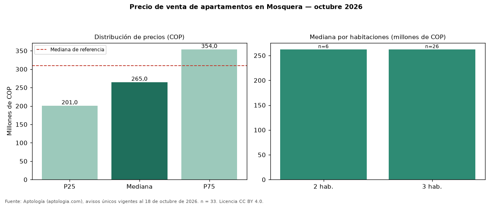

Precio de venta de apartamentos en Mosquera — octubre 2026
COP 265 millones es la mediana de venta de apartamentos en Mosquera, según 33 avisos únicos. Eso es 15 % menos que la mediana de toda la oferta de venta en Mosquera (COP 310 millones). Por metro cuadrado, la mediana es COP 4.312.500/m² (+0 % frente a COP 4.312.500/m²), puesto 6 de 15 ciudades comparables. Por habitaciones: 2 habitaciones, COP 262 millones (n = 6); 3 habitaciones, COP 262 millones (n = 26). El área mediana es 57 m² (referencia: 67 m²). El estrato más frecuente es 3. El rango intercuartílico va de COP 201 millones a COP 354 millones (razón 1,8). Datos abiertos CC BY 4.0 de Aptología; fuente y búsqueda de inmuebles: https://www.aptologia.com/venta/mosquera. Archivos: PDF de 2 páginas, CSV con las cifras y gráfica PNG.

| Avisos únicos | 33 |
|---|---|
| Percentil 25 | COP 201.000.000 |
| Mediana | COP 265.000.000 |
| Percentil 75 | COP 354.000.000 |
| Mediana por m² | COP 4.312.500 |
Fuente: avisos vigentes de portales inmobiliarios recopilados por Aptología, deduplicados (mínimo 30 avisos únicos por celda). Precios pedidos, no cerrados. Fecha: 2026-10-18.